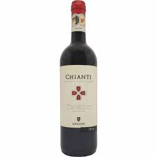

Bebidas Tradicionais Italianas |
| A Itália é conhecida não apenas por sua culinária, mas também pela variedade e riqueza de suas bebidas típicas, que incluem vinhos renomados e uma série de licores e outras bebidas alcoólicas e não alcoólicas. |
Vinhos Italianos |
Brunello di Montalcino:Um vinho tinto robusto da região da Toscana. Chianti:Outro vinho toscano, conhecido por seu sabor frutado e notas de ervas.  Prosecco:Um vinho espumante leve e refrescante da região de Vêneto, muitas vezes usado em coquetéis como o famoso Aperol Spritz |
Licores |
Limoncello:Um licor de limão originário da região da Campânia, apreciado como digestivo após as refeições Amaretto:Um licor doce com sabor de amêndoa, originário de Saronno, perto de Milão. Grappa:Um destilado de bagaço de uva, variando em sabor conforme a uva utilizada e o processo de envelhecimento |
Bebidas Não Alcoólicas |
:O café expresso é um ícone da cultura italiana, conhecido por seu sabor forte e concentrado Cappuccino:Uma combinação de expresso, leite vaporizado e espuma de leite, geralmente consumido no café da manhã. |
|
|